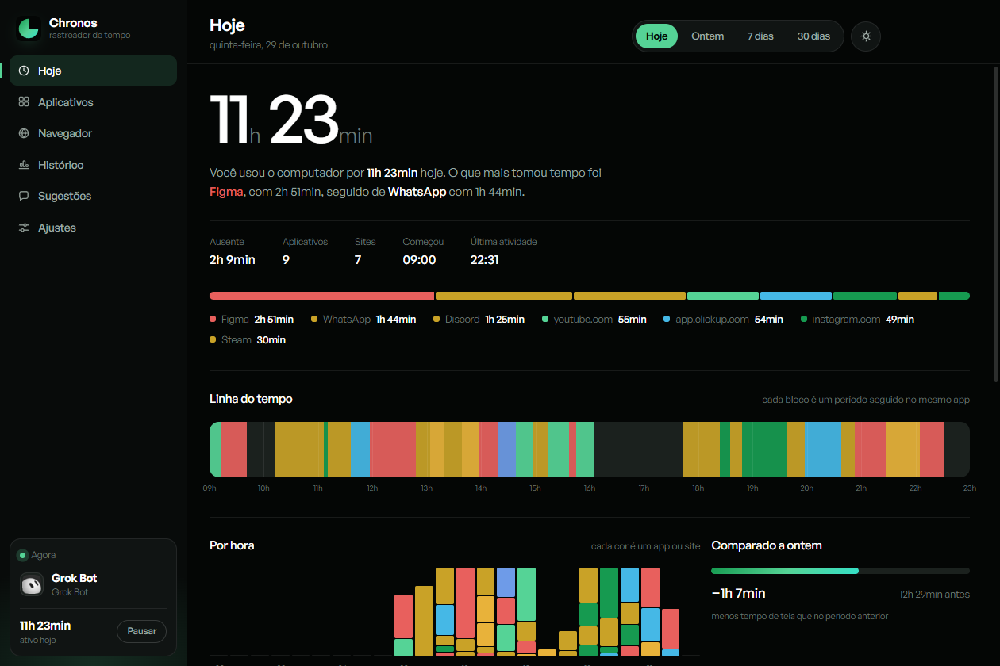
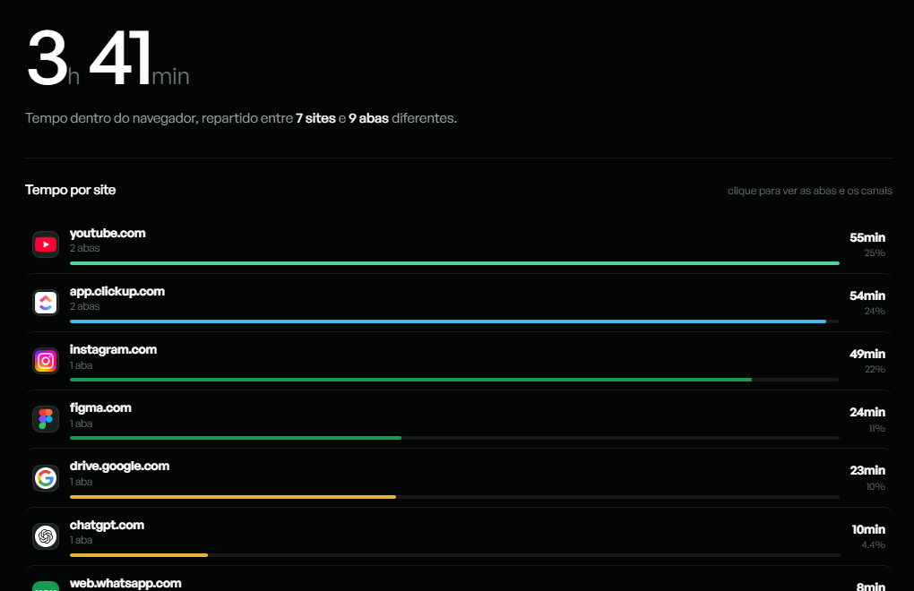
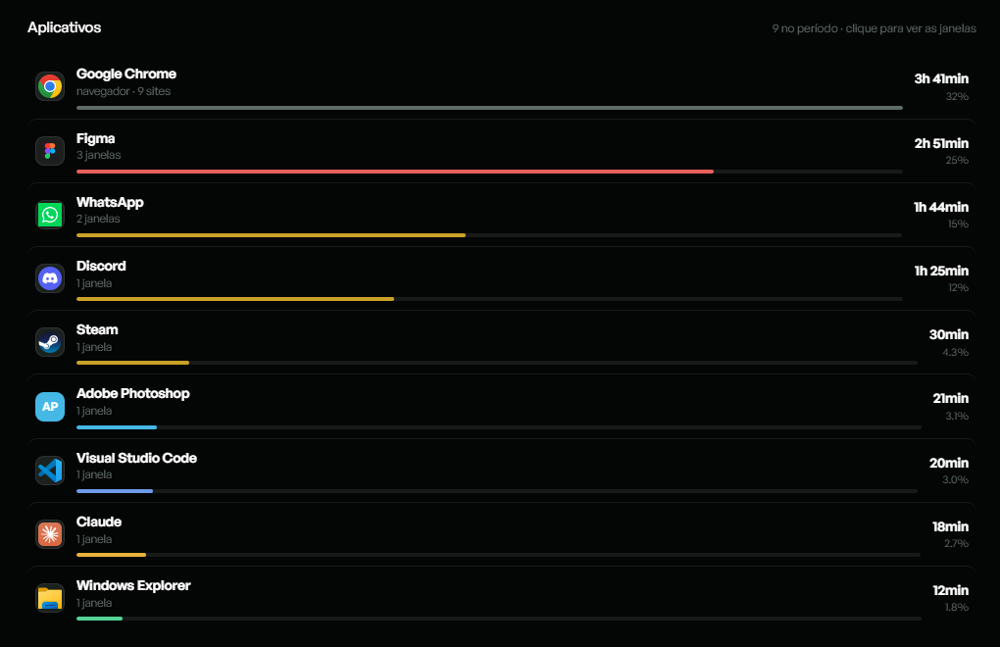

Para onde foi
o seu dia?
O Chronos mede quanto tempo você passa em cada programa, em cada site e em cada aba. Sem cronômetro, sem anotar nada, sem conta para criar.
Windows 10 e 11 · 98 MB · grátis

Como funciona
Ele olha a janela ativa.
Você não faz nada.
Abriu o Chronos uma vez, ele fica na bandeja e cuida do resto. No fim do dia existe um relatório que você não precisou alimentar.
Mede sozinho
A cada 2 segundos ele vê qual janela está na frente e há quanto tempo o teclado está parado. Sem teclado nem mouse, o tempo vira “ausente” em vez de virar número inflado.
Separa o que importa
Alt+Tab, área de trabalho e janelas de sistema não viram linha. O que durou poucos segundos também sai do relatório — você escolhe o limite.
Guarda no seu PC
Um arquivo por dia, na sua máquina. Sem nuvem, sem login, sem sincronizar com ninguém.
Navegador
Duas horas de YouTube não são duas horas de Chrome.
O Chronos lê o endereço da aba ativa e conta por site. Depois você abre e vê quais abas, quais vídeos, quais canais.
Por site e por aba, não por navegador.
Funciona em Chrome, Edge, Brave, Firefox, Opera e Vivaldi.
Guarda o endereço sem a parte da busca — nada de termos pesquisados.

Segundo plano
Se está rodando, está sendo usado.
Vídeo na segunda tela enquanto você trabalha? Conta. Call aberta com o aplicativo minimizado? Conta. Programa só aberto, parado, em silêncio? Não conta.
Vídeo e música contam no site certo, com o nome do canal.
Call minimizada conta enquanto a transmissão existe.
Assistir de frente não conta duas vezes.

Privacidade
Os seus dados não saem daqui.
O Chronos não tem servidor, não tem conta e não manda nada para lugar nenhum. Tudo o que ele mede fica em um arquivo na sua máquina, que você pode abrir, exportar em planilha ou apagar a qualquer momento.
Comece hoje e amanhã já tem o que olhar.
Na primeira execução o Windows mostra um aviso do SmartScreen, porque o instalador não é assinado digitalmente. É só clicar em Mais informações e depois em Executar assim mesmo. O app se atualiza sozinho a partir daí.